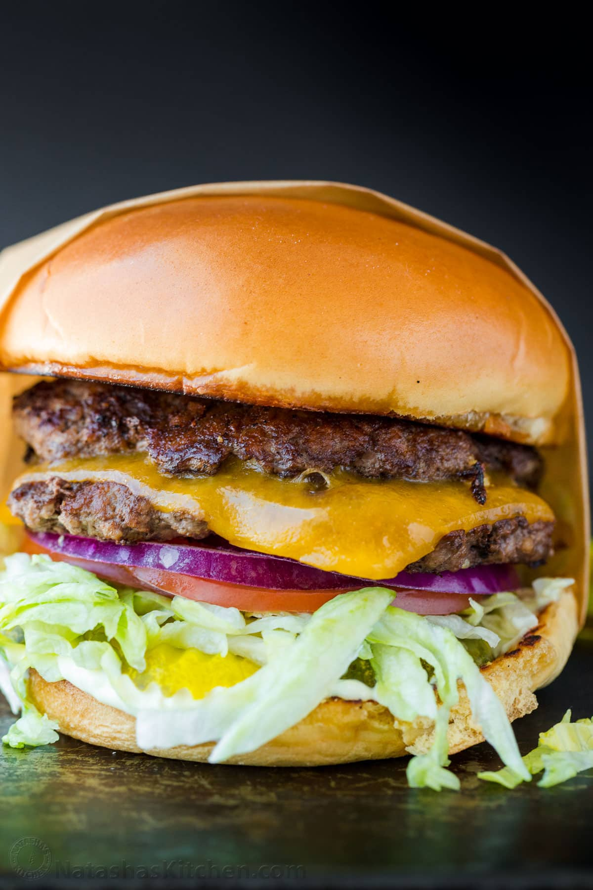

Smash Burger

Why do we love Smash Burgers?
A homemade Smash Burger is quick and easy to make. These fly off the grill in minutes so it’s a great way to feed a crowd.
Smash burgers have the iconic flavor profile of classic Burgers, but that double
burger patty with cheese melted in between is irresistible and you’ll love the special sauce.
Ingredients
Servings:4
Smash Burger Patties
- 1 1/2 lbs ground beef
- salt, to taste
- black pepper, to taste
- garlic powder, optional
- 4 slices medium cheddar cheese
Special Sauce
- 1/3 cup mayonnaise
- 1 tsp yellow mustard
Toppings
- 4 burger buns
- 2 cups iceberg lettuce
- 1 large tomato
- 1/2 red onion
- 2 dill pickles
Instructions
Portion Beef Patties
- Divide beef into 8 even portions, about 3 oz each. Loosely Roll them into balls then cover and refrigerate while preparing remaining ingredients. The meat must be cold when it hits the grill.
Prep Toppings and Buns
- Remove wilted leaves from lettuce to keep it crunchy then finely shred lettuce. Slice tomatoes, onions, and pickles.
- Butter and toast buns over medium heat until golden on the buttered side.
Cook the Patties
- Increase griddle to medium/high heat. Place 2-4 burger balls onto hot griddle.
Working quickly, place parchment paper over the meat and firmly smash straight down into a thin patty.
- Once patties are smashed, peel back and discard parchment papers and season patties with salt, pepper and garlic powder.
Add 1/2 teaspoon of burger sauce. Cook 2 minutes on the first side or until seared and juices start to come to the surface.
- Scrape under the burger with spatula facing down at a 45˚ angle to get under the caramelized part and flip. Cook another 1 minute.
Top half of the patties with sliced cheese and cover cheese with the second patty. Repeat with remaining burgers and transfer them to a platter as they finish cooking.
Assemble Burgers
- Place sauce on bottom of bun. Top with 3 pickle slices, shredded lettuce, 2 tomato slices and thin sliced onion.
Add double patty and top with bun.